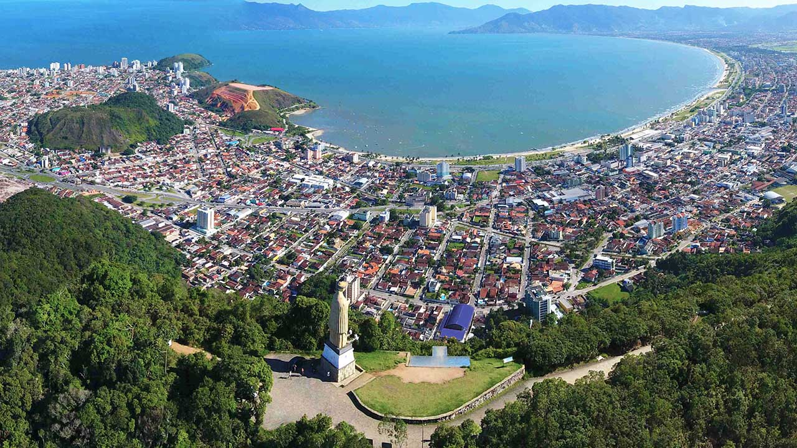
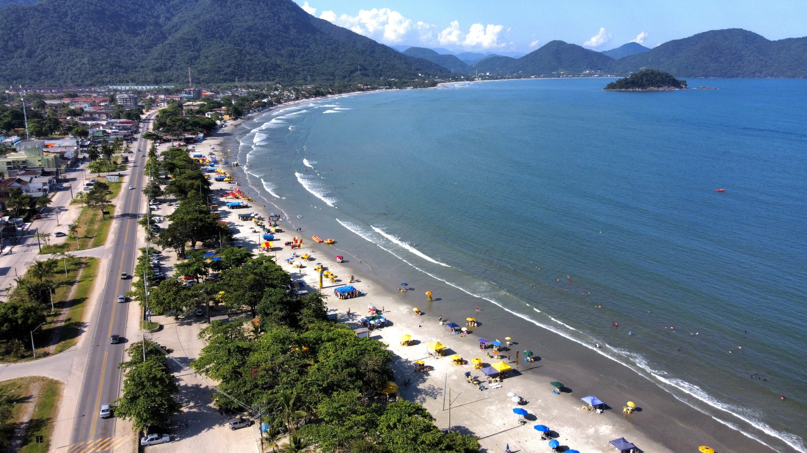

O Brasil é um dos países tropicais conhecidos pelas praias mais bonitas do planeta. Confira as melhores praias para esse verão.
Jericoacoara
Jericoacoara é uma praia localizada na vila homônima, no município de Jijoca de Jericoacoara, no estado do Ceará, no Brasil. Está localizada a 295 km a oeste da capital do estado, Fortaleza. Foi eleita em 1994 pelo jornal estadunidense The Washington Post uma das dez praias mais bonitas do planeta.Em 2014, foi eleita pelo Huffington Post a quarta melhor praia da Terra.É um dos locais mais frequentados por praticantes de windsurfe no país. A praia é parte integrante do Parque Nacional de Jericoacoara.
Atrações;
Pedra Furada.
Duna Pôr do sol.
Igreja Nossa Senhora da Consolação.
Serrote.
Farol de Jericoacoara
Campo das Dunas
Praia Grande de Ubatuba
Encravada entre a serra e o mar, Ubatuba é um dos mais espetaculares e bem preservados destinos do Litoral Norte de São Paulo. E serão necessárias muitas viagens para conhecer as mais de cem praias que recheiam o cenário recortado desse pedacinho da Serra do Mar. Ubatuba encanta com praias ainda desertas e de natureza quase intocada, muitas com acesso fácil e outras com lindas trilhas em meio à Mata Atlântica.
Atrações
Praia Grande.
Surfar em Ubatuba.
Trilha das 7 Praias.
Gruta que Chora.
Ruínas da Lagoinha.
Cachoeira do Prumirim.
Mirante Baguari de Fora.
Praia do Cedro.
Barra de Camaranduba
Barra de Camaratuba é uma praia que está localizada no município de Mataraca, distante 110 km da capital João Pessoa; ela é também a última praia do litoral norte da Paraíba, fazendo divisa com o Rio Grande do Norte. Privilegiada pela sua exuberância natural e selvagem, a praia proporciona aos visitantes diversos passeios para conhecer os encantos e magias da região. Além de emocionantes passeios de buggy pelas extensas praias ligando a Paraíba ao Rio Grande do Norte, o turista tem a oportunidade de conhecer a reserva indígena dos potiguaras, vivenciando os costumes e danças com os nativos. O acesso à reserva indígena pode ser feito de barco ou jangada, através do manguezal.
Atrações
quadriciclo
explorar as dunas de areia
cruzar rios
Passeio de 4x4 leva os viajantes a praias remotas e intocadas, onde podem desfrutar de uma experiência de praia mais isolada e tranquila.
Caraguatatuba

Caraguatatuba é um município brasileiro no litoral norte do estado de São Paulo. Conhecida como a capital do litoral norte, Integra a Região Imediata de Caraguatatuba-Ubatuba-São Sebastião, localizando-se a leste da capital do estado e distando desta cerca de 178 km. A cidade ocupa uma área de 484,947 km². De acordo com o Censo 2022, a população do município é de 134.873 habitantes, resultando em uma densidade demográfica de 278,12 hab./km², sendo o 57.º município mais populoso de São Paulo e o 219.º do país. O município é formado pela sede e pelo distrito de Porto Novo Além das praias, Caraguatatuba oferece outras atrações, como o Morro de Santo Antônio, onde há um mirante com uma vista privilegiada da cidade e de São Sebastião. Para chegar lá, é necessário percorrer uma trilha íngreme com aproximadamente 2 quilômetros de extensão
Atrações
Praia Martim de Sá
Serramar Shopping.
Praia da Cocanha.
Parque Trombini.
Praia da Cocanha.
Caraguá Praia Shopping.
Praia do Indaiá
Terminal Rodoviário Aldo Navarro Magalhães.
Mirante do Camaroeiro.

A Maranduba está localizada a 25 quilômetros do centro e possui centro comercial, quiosques, hotéis, pousadas, restaurantes, lojas, postos de gasolina, bancas de jornais e sub-prefeitura. Sua orla disputa com a Praia Grande um dos pontos de maior movimento da região. Tem vida noturna, bares e quiosques com música ao vivo.
Atraçôes
Curtir a vida noturna da Maranduba
Fazer a Trilha do Saco das Bananas
Fazer a Trilha das Sete Praias
Toboágua
Passeios de Barco
Conhecer as Cachoeiras do Sertão da Quina
Cuidados do Verão
Todos nós queremos curtir as férias de veão da melhor forma possível. Fique ligadp e siga as dicas a seguir.
Use protetor solar com fator de proteção adequado (FPS 30 ou mais) e reaplique a cada 2 horas, especialmente após entrar na água. A exposição prolongada ao sol pode causar queimaduras, envelhecimento precoce e aumentar o risco de câncer de pele.
Beba bastante água para manter-se hidratado, já que o calor intenso pode levar à desidratação. Evite consumir apenas bebidas alcoólicas, pois elas podem acelerar a desidratação.
Algumas praias possuem correntes fortes que podem arrastar nadadores para o mar aberto. Fique atento às bandeiras de sinalização e sempre nade em áreas supervisionadas por salva-vidas.
Evite o sol entre 10h e 16h, quando os raios ultravioleta (UV) são mais intensos. Se estiver na praia nesse período, busque sombra e use acessórios de proteção, como chapéus, óculos escuros e roupas leves.
Coma alimentos leves e frescos. Evite comidas de origem duvidosa ou mal conservadas, pois o calor pode acelerar a deterioração e causar intoxicações alimentares.
Esses cuidados garantem maior segurança e conforto durante os dias de praia no verão.
Cuidados com as crianças
.Na praia devemos tomar o máximo de cuidado, principalmente com as crianças, aqui vai algumas dicas de como cuidar do seu pequeno.
Horário Ideal:Devido à intensidade dos raios solares em determinados momentos do dia e os danos à pele associados à exposição solar contínua nesses períodos, especialistas recomendam evitar a praia entre 10h e 15h.
Cuidar da alimentação e da hidratação:Principalmente em locais desconhecidos, com crianças, o ideal é levar alimentação de casa. Isso porque, muitas vezes, é difícil saber a procedência dos itens vendidos na praia, a sua forma de armazenamento e manejo – sim, é fácil haver contaminação. É possível também que as crianças não gostem do que está à disposição
Redobre os cuidados com a pele infantil:A pele de uma criança ainda não desenvolveu mecanismos de autodefesa de uma pele adulta saudável e, por isso, é mais sensível e delicada. Aplique protetor solar antes de sair de casa, com uns 15 minutos de antecedência, e durante o dia, de duas em duas horas, não se esqueça de reaplicar para manter a efetividade da proteção.
Atenção no banho de mar:Não é só na hora da brincadeira que é preciso ter cuidado com as crianças. Na hora de ir para o mar, além de garantir que sempre tenha um adulto próximo, é importante lembrar-se de colocar boias nas crianças menores e também ficar atento com a presença de águas vivas, que podem aparecer em excesso em algumas praias.
Identifique os pequenos:Pulseirinhas com nome e telefone dos pais são importantes m lugares muito cheios, há sempre o risco de a criança se perder. Para evitar que isso aconteça, coloque nas crianças uma pulseira com o nome e o telefone dos pais. E, para os maiores, marque um ponto de encontro caso vocês se afastem
Tenha uma farmacinha e um kit de primeiros socorros:Este é o item da mala que ninguém quer usar durante a viagem. Mas imprevistos acontecem e o melhor é estar precavido. Se uma criança se machucar durante uma brincadeira na praia, é bom ter os itens necessários para limpar o ferimento e fazer um curativo. Mas nunca deixe de ir ao hospital ou procurar um médico em situações mais graves.
Abaixo trazemos sugestões de principais empresas para comprar seu pacote de viagens. Lembre-se de verificar antes a reputação da empresa, não nos responsabilizamos por golpes. Reserve sua viajgem com antecedência e economize.
Clique nos ícones e confira as promoções
Criadores do site
Este site é produzido por alunos do curso de Desenvolvimento de JS do SENAI. Abaixo está a localização de unidade em que ocorreu o curso.
.png)